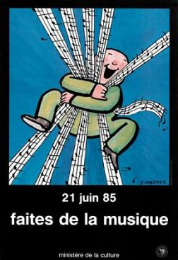
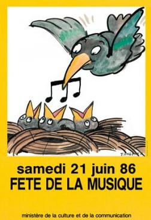

En 1982, une étude sur les pratiques culturelles des français, met en avant que cinq millions de personnes dont un jeune sur deux, jouent d'un instrument de musique. Jack LANG et Maurice FLEURET appliquent alors leurs réflexions sur la pratique musicale et son évolution : "la musique partout et le concert nulle part" et se prennent à rêver de faire descendre les gens dans la rue.
Et c'est ainsi, en quelques semaines, que la Fête de la Musique est lancée, le 21 juin 1982, jour du solstice d'été, nuit païenne se référant à l'ancienne tradition des fêtes de la Saint-Jean.
"Faîtes de la musique, Fête de la Musique"
La formule devenue mot d'ordre n'avait rien du slogan. Cette mobilisation des musiciens professionnels et amateurs, cette attention nouvelle portée à tous les genres musicaux, devenaient ainsi, à travers la réussite immédiate d'une manifestation populaire et largement spontanée, la traduction d'une politique qui entendait accorder leur place aux pratiques amateur ainsi qu'au rock, au jazz, à la chanson et aux musiques traditionnelles, aux côtés des musiques dites sérieuses ou savantes.
Rendez-vous le 21 Juin pour la 31ème édition de la Fête de la Musique.
Comme chaque année, le Fete va être l'occassion de voir un sacré bon gros concert, puis de partir déambuller dans les rues de la ville, de groupes en groupes, de surprises en surprises ... Lire la suite

